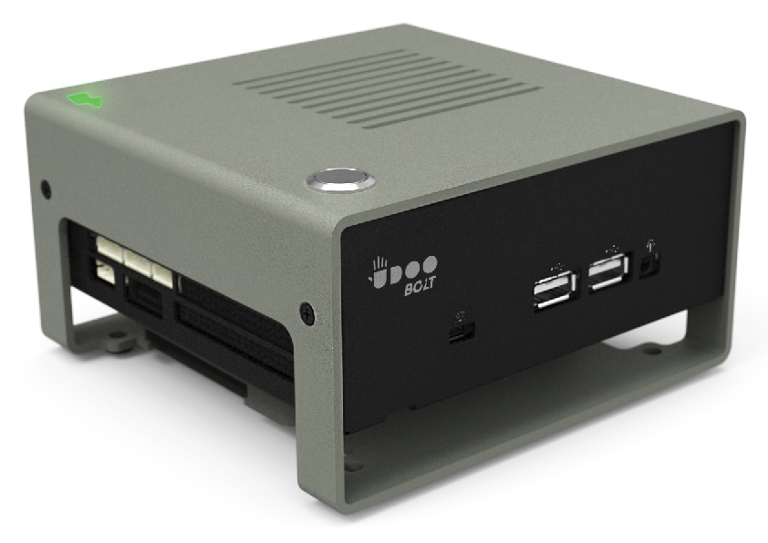
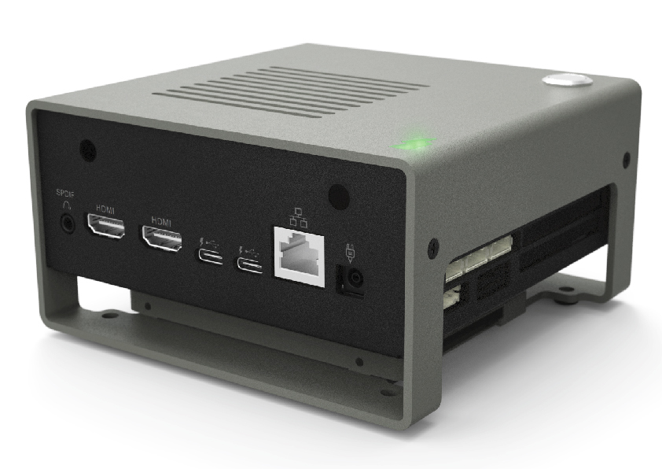

Official Accessories
In the UDOO Shop you can also find some accessories for the UDOO BOLT.
M.2 Modules
M.2 SSD Transcend MTS600 2260

- Capacity: 128GB/256GB/512GB
- Dimensions: 60.0mm × 22.0mm × 3.58mm (2.36" x 0.87" x 0.14")
- Weight: 6g (0.21 oz)
- Storage Media: MLC NAND Flash memory
- Operating Voltage: DC 3.3V±5%
- Operating Temperature: 0°C (32°F) to 70°C (158°F)
For more info about this SSD module you can check the official Transcend page
To mount the SSD is necessary the following fixtures (included with the board):
- 1x M3x4mm Screw
M.2 Wi-Fi Intel dual band ac Wi-Fi + BT 4.2 5GHz + adhesive antenna

The package includes:
- Wi-Fi AC and Bluetooth 4.2 module
- Intel® Dual Band Wireless Wi-Fi AC and Bluetooth 4.2 module (AC3168)
- Dimensions: 4.9 x 3.5 x 0.4 inches
- Weight: 8.5g (0.3 oz)
- M.2 compatible RF micro coax type connector
- 2x Antennas
- IPEX MFH-4 connector
- 10cm IPEX cable
- Adhesive backing on aerial plates
For more info about this WiFi/BT module you can check the datasheet from the Intel website
Heads up! Intel® Dual Band Wireless Wi-Fi AC and Bluetooth 4.2 module (Intel® AC3168) was released in 2016 so we suggest to use a recent distribution to find the latest drivers already installed. If you are using a Linux distribution you need at least the v4.6 of the Linux Kernel to make this module work properly.
Heads up! You need both the antennas to make the module work properly. Connect an antenna to the Main A connector to enhance Wi-Fi signal. Connect an antenna to the Aux B connector to enhance Bluetooth and BluetoothLE signal.
To mount the WiFi/BT Kit the following fixtures are necessary(included with the board):
- 1x M3x4mm Screw
M.2 dual Ethernet Module Kit

This module is based on 2x Realtek 8111GS Ethernet controllers (fully compliant with IEEE 802.3, IEEE 802.3u, IEEE 802.3ab).
When the M.2 dual Ethernet Module Kit accessory is plugged into M.2 Key B slot, the UDOO BOLT board will offer three different Gigabit Ethernet ports.
To mount the M.2 dual Ethernet Module Kit the following fixtures are necessary (included with the board):
- 1x M3x4mm Screw
Mounting a M.2 accessory
Mount the M.2 devices with the same metal screws that you find with the board when you purchased it. If the screws are no longer available, take care to use a metal one with the same characteristics as the one supplied - M3x4mm.
Displays
7inch HDMI/USB Display/Touch

The 7inch HDMI/USB Display/Touch has a 1024×600 pixel resolution and is supported by Windows 10/8.1/8/7, Linux, and Android Operating System
Display Features:
- 1024×600 high resolution;
- Resistive touch control;
- Compatible and Direct-connect with UDOO BOLT with Windows 10 and Linux Operating Systems;
- Also works as a computer monitor, in this case, touch panel is unavailable and HDMI cable is required;
- HDMI interface for displaying, no I/Os required (however, the touch panel still needs I/Os);
- Multi-languages OSD menu, for power management, brightness adjustment, contrast adjustment, etc;
- Supports 100-level backlight adjustment.
To use it just:
1- Turn On the “backlight” switch on the back of the LCD;
2- Connect the Touch ports on your UDOO. The device will be recognized automatically;
3- Connect the HDMI port of the LCD to the HDMI port on your UDOO with an HDMI cable.
Heads up! When multiple displays are detected by your UDOO, the LCD can only be used to control the cursor on main displays. So it is proposed to set the LCD as the main display.
If you're looking for more info about this screen you can check the wiki page of the manufacturer: 7inch_HDMI_LCD_(C)
Cases
Metal Case
A beautiful metal case for your UDOO BOLT.
Heads up! Please notice that the case does not dissipate heat itself, but it allows the airflow to dissipate the board properly using the processor fan.
Check the mechanical drawing to see the case dimensions.
UDOO BOLT METAL CASE includes:
- 1x Sheet Metal Internal Part;
- 1x Extruded Metal external Part;
- 1x accessory kit:
- 4x M3x6mm pan head screw, cross recessed
- 4x M3x6mm countersink screw, cross recessed
- 4x M2.5x6mm countersink screw, cross recessed
- 1x Light Pipe
- 1x Rubber stop for light pipe
- 4x M4x12mm countersink screw, cross recessed
- 4x M3 washer
- 1x Momentary Push Button 12mm
- 4x Rubber feet

The case features in the bottom 4 holes standard VESA MIS-D 100 (100mm x 100mm) to mount the entire case behind a monitor VESA compatible with the included screws. Always in the bottom part there are other 4 holes and the empty space to fix a 2.5" Sata hard drive.
The case also features two holes in the back side, to connect the WiFi externally and BT antennas of the M.2 module through a RP-SMA connector.
For example you can use 2x IPEX MFH-4(W.FL) to RP-SMA cables and 2x RP-SMA antennas like in the following image.
Heads up! These items are not included.

Cables and Others
Cables
- HDMI to HDMI - HDMI A Male to A Male Cable 2MT: Supports Ethernet, 3D, 4K video and Audio Return Channel (ARC)
- SATA data and power cables kit - SATA data and power cables for UDOO BOLT (CN18 and CN30 connectors)
- USB-C HUB - It includes 3x USB Type-A and 1GB Ethernet ports
Power Supply
-
19V 65W AC power adapter
- Input: 100-240VAC 50/60Hz Output: 19V 3.42A DC
- Output plug: 4.5mm * 3mm * 10mm
- USA Power Cable - The USA power cable that you need to use with the 19V 65W AC power adapter
- EU Power Cable - The EU power cable that you need to use with the 19V 65W AC power adapter